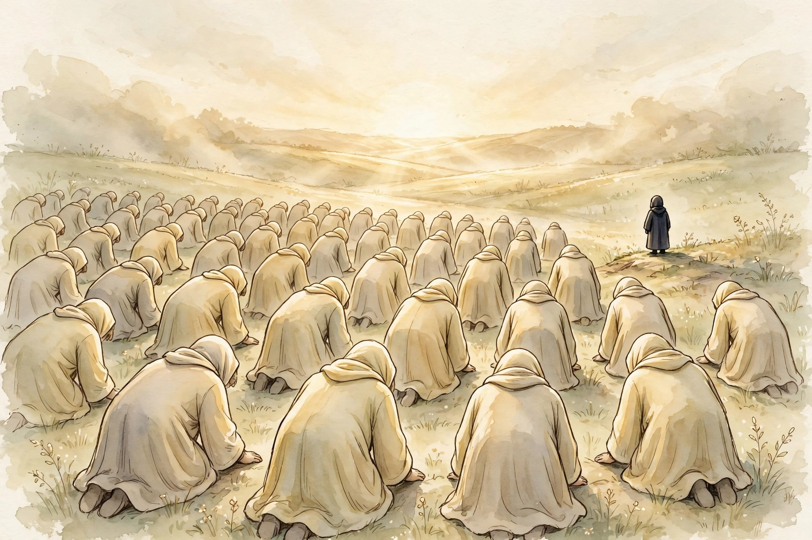
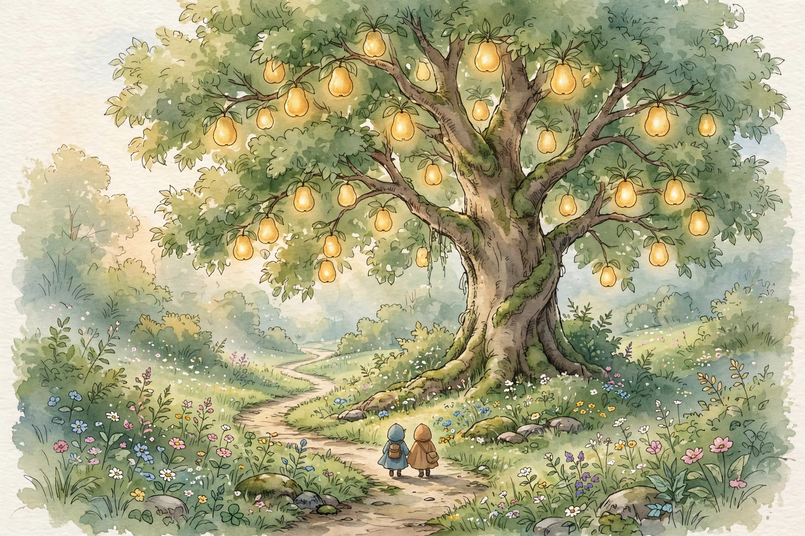
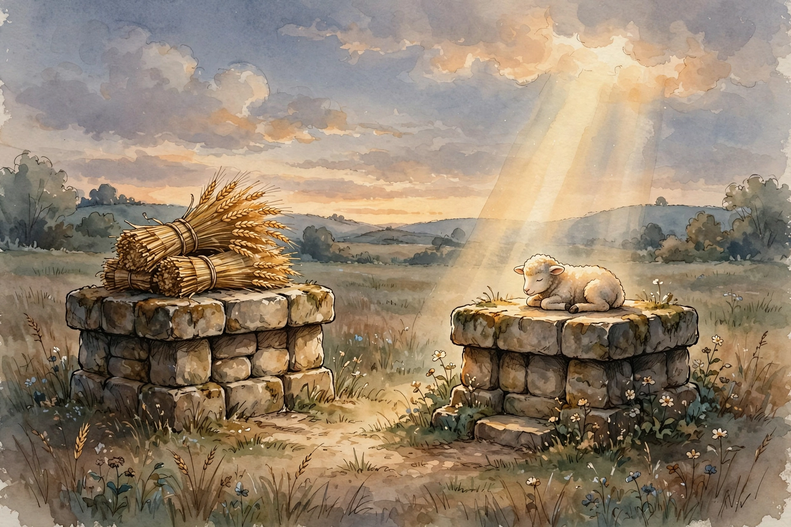
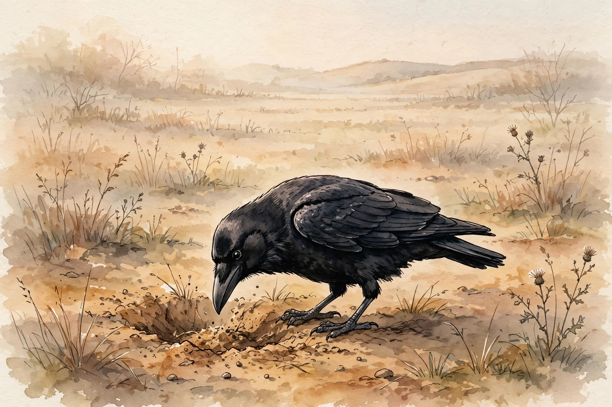

Scene 1 of 13
The Announcement
Before there was any human being on earth, Allah spoke to the angels and told them His plan: He would place upon the earth a khalifa — a successive authority. The angels, who spent their existence praising Allah and declaring His perfection, asked a question: would He place there one who would cause corruption and shed blood? Allah answered them with words that settle every question beyond our sight: “Indeed, I know that which you do not know.”
Quran 2:30
وَإِذْ قَالَ رَبُّكَ لِلْمَلَـٰٓئِكَةِ إِنِّى جَاعِلٌ فِى ٱلْأَرْضِ خَلِيفَةً ۖ قَالُوٓا۟ أَتَجْعَلُ فِيهَا مَن يُفْسِدُ فِيهَا وَيَسْفِكُ ٱلدِّمَآءَ وَنَحْنُ نُسَبِّحُ بِحَمْدِكَ وَنُقَدِّسُ لَكَ ۖ قَالَ إِنِّىٓ أَعْلَمُ مَا لَا تَعْلَمُونَ
And [mention, O Muḥammad], when your Lord said to the angels, "Indeed, I will make upon the earth a successive authority." They said, "Will You place upon it one who causes corruption therein and sheds blood, while we exalt You with praise and declare Your perfection?" He [Allāh] said, "Indeed, I know that which you do not know."
Surah 2 · Verse 30 — Saheeh International
Scene 2 of 13
The Creation
Then Allah fashioned Adam. When He had proportioned him — shaped and formed him — and breathed into him of His created soul, He commanded the angels: fall down to him in prostration. This was no ordinary creature. Allah Himself gave him form, and breathed into him, and ordered the angels to honour him.
Quran 15:29
فَإِذَا سَوَّيْتُهُۥ وَنَفَخْتُ فِيهِ مِن رُّوحِى فَقَعُوا۟ لَهُۥ سَـٰجِدِينَ
And when I have proportioned him and breathed into him of My [created] soul, then fall down to him in prostration.
Surah 15 · Verse 29 — Saheeh International
Hadith
“Allah created Adam, making him 60 cubits tall. When He created him, He said to him, "Go and greet that group of angels, and listen to their reply, for it will be your greeting (salutation) and the greeting (salutations) of your offspring." So, Adam said (to the angels), As-Salamu Alaikum (i.e. Peace be upon you). The angels said, "As-salamu Alaika wa Rahmatu-l-lahi" (i.e. Peace and Allah's Mercy be upon you). Thus the angels added to Adam's salutation the expression, 'Wa Rahmatu-l-lahi.' Any person who will enter Paradise will resemble Adam (in appearance and figure). People have been decreasing in stature since Adam's creation.”
— Narrated Abu Huraira
Scene 3 of 13
The Names
Allah gave Adam something no other creature had been given: knowledge. He taught Adam the names — all of them. Then He showed them to the angels and challenged them: “Inform Me of the names of these, if you are truthful.” Before any test of strength, mankind was honoured with a test of knowledge.
Quran 2:31
وَعَلَّمَ ءَادَمَ ٱلْأَسْمَآءَ كُلَّهَا ثُمَّ عَرَضَهُمْ عَلَى ٱلْمَلَـٰٓئِكَةِ فَقَالَ أَنۢبِـُٔونِى بِأَسْمَآءِ هَـٰٓؤُلَآءِ إِن كُنتُمْ صَـٰدِقِينَ
And He taught Adam the names - all of them. Then He showed them to the angels and said, "Inform Me of the names of these, if you are truthful."
Surah 2 · Verse 31 — Saheeh International
Scene 4 of 13
The Prostration
Then Allah commanded the angels: “Prostrate before Adam.” And they all prostrated — every one of them — except one. Iblis refused. He was arrogant, and he became of the disbelievers. The angels obeyed; Iblis refused — and the first sin recorded here was pride.
Quran 2:34
وَإِذْ قُلْنَا لِلْمَلَـٰٓئِكَةِ ٱسْجُدُوا۟ لِـَٔادَمَ فَسَجَدُوٓا۟ إِلَّآ إِبْلِيسَ أَبَىٰ وَٱسْتَكْبَرَ وَكَانَ مِنَ ٱلْكَـٰفِرِينَ
And [mention] when We said to the angels, "Prostrate before Adam"; so they prostrated, except for Iblees. He refused and was arrogant and became of the disbelievers.
Surah 2 · Verse 34 — Saheeh International

Scene 5 of 13
The Refusal
Allah asked Iblis directly: “What prevented you from prostrating when I commanded you?” Iblis did not ask forgiveness. He argued: “I am better than him. You created me from fire and created him from clay.” He measured himself against Adam by what they were made of, and decided the fire in him was nobler than the clay in Adam.
Quran 7:12
قَالَ مَا مَنَعَكَ أَلَّا تَسْجُدَ إِذْ أَمَرْتُكَ ۖ قَالَ أَنَا۠ خَيْرٌ مِّنْهُ خَلَقْتَنِى مِن نَّارٍ وَخَلَقْتَهُۥ مِن طِينٍ
[Allāh] said, "What prevented you from prostrating when I commanded you?" [Satan] said, "I am better than him. You created me from fire and created him from clay [i.e., earth]."
Surah 7 · Verse 12 — Saheeh International
Scene 6 of 13
The Garden
Allah settled Adam in Paradise, with his wife beside him. “O Adam,” He said, “dwell, you and your wife, in Paradise, and eat from wherever you will — but do not approach this tree, lest you be among the wrongdoers.” One tree. One command. Everything else in the Garden was theirs.
Quran 7:19
وَيَـٰٓـَٔادَمُ ٱسْكُنْ أَنتَ وَزَوْجُكَ ٱلْجَنَّةَ فَكُلَا مِنْ حَيْثُ شِئْتُمَا وَلَا تَقْرَبَا هَـٰذِهِ ٱلشَّجَرَةَ فَتَكُونَا مِنَ ٱلظَّـٰلِمِينَ
And "O Adam, dwell, you and your wife, in Paradise and eat from wherever you will but do not approach this tree, lest you be among the wrongdoers."
Surah 7 · Verse 19 — Saheeh International

Scene 7 of 13
The Whispering
But there was an enemy waiting — the same Iblis who had refused to bow. Satan whispered to Adam and his wife, hoping to expose what had been hidden from them. And he lied to them about their Lord: “Your Lord only forbade you this tree so that you would not become angels, or become of the immortal.” The first lie ever told to mankind was about Allah.
Quran 7:20
فَوَسْوَسَ لَهُمَا ٱلشَّيْطَـٰنُ لِيُبْدِىَ لَهُمَا مَا وُۥرِىَ عَنْهُمَا مِن سَوْءَٰتِهِمَا وَقَالَ مَا نَهَىٰكُمَا رَبُّكُمَا عَنْ هَـٰذِهِ ٱلشَّجَرَةِ إِلَّآ أَن تَكُونَا مَلَكَيْنِ أَوْ تَكُونَا مِنَ ٱلْخَـٰلِدِينَ
But Satan whispered to them to make apparent to them that which was concealed from them of their private parts. He said, "Your Lord did not forbid you this tree except that you become angels or become of the immortal."
Surah 7 · Verse 20 — Saheeh International
Scene 8 of 13
The Slip
Deceived, they fell. When they tasted of the tree, what had been hidden from them became visible, and they began fastening together over themselves leaves from the Garden. Then their Lord called out to them: “Did I not forbid you from that tree — and tell you that Satan is to you a clear enemy?”
Quran 7:22
فَدَلَّىٰهُمَا بِغُرُورٍ ۚ فَلَمَّا ذَاقَا ٱلشَّجَرَةَ بَدَتْ لَهُمَا سَوْءَٰتُهُمَا وَطَفِقَا يَخْصِفَانِ عَلَيْهِمَا مِن وَرَقِ ٱلْجَنَّةِ ۖ وَنَادَىٰهُمَا رَبُّهُمَآ أَلَمْ أَنْهَكُمَا عَن تِلْكُمَا ٱلشَّجَرَةِ وَأَقُل لَّكُمَآ إِنَّ ٱلشَّيْطَـٰنَ لَكُمَا عَدُوٌّ مُّبِينٌ
So he made them fall, through deception. And when they tasted of the tree, their private parts became apparent to them, and they began to fasten together over themselves from the leaves of Paradise. And their Lord called to them, "Did I not forbid you from that tree and tell you that Satan is to you a clear enemy?"
Surah 7 · Verse 22 — Saheeh International
Scene 9 of 13
Repentance
Adam and his wife did not run from their mistake, and they did not blame each other. They turned back to their Lord with words He Himself taught them: “Our Lord, we have wronged ourselves, and if You do not forgive us and have mercy upon us, we will surely be among the losers.” And Allah — the Accepting of Repentance, the Merciful — accepted their repentance. This is the difference between Adam and Iblis: one disobeyed and returned, the other disobeyed and argued.
Quran 7:23
قَالَا رَبَّنَا ظَلَمْنَآ أَنفُسَنَا وَإِن لَّمْ تَغْفِرْ لَنَا وَتَرْحَمْنَا لَنَكُونَنَّ مِنَ ٱلْخَـٰسِرِينَ
They said, "Our Lord, we have wronged ourselves, and if You do not forgive us and have mercy upon us, we will surely be among the losers."
Surah 7 · Verse 23 — Saheeh International
Quran 2:37
فَتَلَقَّىٰٓ ءَادَمُ مِن رَّبِّهِۦ كَلِمَـٰتٍ فَتَابَ عَلَيْهِ ۚ إِنَّهُۥ هُوَ ٱلتَّوَّابُ ٱلرَّحِيمُ
Then Adam received from his Lord [some] words, and He accepted his repentance. Indeed, it is He who is the Accepting of Repentance, the Merciful.
Surah 2 · Verse 37 — Saheeh International
Scene 10 of 13
The Descent
Then came the command: “Go down from it, all of you.” But with the descent came a promise — a promise that still stands for every human being alive today: when guidance comes from Allah, whoever follows His guidance will have no fear, and they will not grieve.
Quran 2:38
قُلْنَا ٱهْبِطُوا۟ مِنْهَا جَمِيعًا ۖ فَإِمَّا يَأْتِيَنَّكُم مِّنِّى هُدًى فَمَن تَبِعَ هُدَاىَ فَلَا خَوْفٌ عَلَيْهِمْ وَلَا هُمْ يَحْزَنُونَ
We said, "Go down from it, all of you. And when guidance comes to you from Me, whoever follows My guidance - there will be no fear concerning them, nor will they grieve."
Surah 2 · Verse 38 — Saheeh International
Hadith
“The best day on which the sun has risen is Friday; on it Adam was created, on it he was made to enter Paradise, on it he was expelled from it.”
— Abu Huraira reported Allah's Messenger (peace be upon him) as saying
Scene 11 of 13
The Two Sons
On earth, Adam’s story continued through his children. The Quran tells us, in truth, the story of Adam’s two sons. Each of them made an offering to Allah. It was accepted from one of them, but not from the other. The one whose offering was refused said: “I will surely kill you.” The righteous one answered: “Indeed, Allah only accepts from the righteous.” And even with his brother’s hand raised against him, he refused to raise his own: “I shall not raise my hand toward you to kill you. Indeed, I fear Allah, Lord of the worlds.”
Quran 5:27
وَٱتْلُ عَلَيْهِمْ نَبَأَ ٱبْنَىْ ءَادَمَ بِٱلْحَقِّ إِذْ قَرَّبَا قُرْبَانًا فَتُقُبِّلَ مِنْ أَحَدِهِمَا وَلَمْ يُتَقَبَّلْ مِنَ ٱلْـَٔاخَرِ قَالَ لَأَقْتُلَنَّكَ ۖ قَالَ إِنَّمَا يَتَقَبَّلُ ٱللَّهُ مِنَ ٱلْمُتَّقِينَ
And recite to them the story of Adam's two sons, in truth, when they both made an offering [to Allāh], and it was accepted from one of them but was not accepted from the other. Said [the latter], "I will surely kill you." Said [the former], "Indeed, Allāh only accepts from the righteous [who fear Him]."
Surah 5 · Verse 27 — Saheeh International
Quran 5:28
لَئِنۢ بَسَطتَ إِلَىَّ يَدَكَ لِتَقْتُلَنِى مَآ أَنَا۠ بِبَاسِطٍ يَدِىَ إِلَيْكَ لِأَقْتُلَكَ ۖ إِنِّىٓ أَخَافُ ٱللَّهَ رَبَّ ٱلْعَـٰلَمِينَ
If you should raise your hand toward me to kill me - I shall not raise my hand toward you to kill you. Indeed, I fear Allāh, Lord of the worlds.
Surah 5 · Verse 28 — Saheeh International

Scene 12 of 13
The First Murder and the Crow
But his brother’s soul permitted him the murder of his brother — and he killed him, and became among the losers. A brother had killed his brother: the first murder. Then Allah sent a crow, scratching in the ground, to show the killer how to hide the body of his brother. The murderer looked at the small bird and cried out: “O woe to me! Have I failed to be like this crow and hide the body of my brother?” And he became of the regretful.
Quran 5:30
فَطَوَّعَتْ لَهُۥ نَفْسُهُۥ قَتْلَ أَخِيهِ فَقَتَلَهُۥ فَأَصْبَحَ مِنَ ٱلْخَـٰسِرِينَ
And his soul permitted to him the murder of his brother, so he killed him and became among the losers.
Surah 5 · Verse 30 — Saheeh International
Quran 5:31
فَبَعَثَ ٱللَّهُ غُرَابًا يَبْحَثُ فِى ٱلْأَرْضِ لِيُرِيَهُۥ كَيْفَ يُوَٰرِى سَوْءَةَ أَخِيهِ ۚ قَالَ يَـٰوَيْلَتَىٰٓ أَعَجَزْتُ أَنْ أَكُونَ مِثْلَ هَـٰذَا ٱلْغُرَابِ فَأُوَٰرِىَ سَوْءَةَ أَخِى ۖ فَأَصْبَحَ مِنَ ٱلنَّـٰدِمِينَ
Then Allāh sent a crow searching [i.e., scratching] in the ground to show him how to hide the disgrace [i.e., body] of his brother. He said, "O woe to me! Have I failed to be like this crow and hide the disgrace [i.e., body] of my brother?" And he became of the regretful.
Surah 5 · Verse 31 — Saheeh International
Hadith
“Whenever a person is murdered unjustly, there is a share from the burden of the crime on the first son of Adam for he was the first to start the tradition of murdering.”
— Narrated 'Abdullah

Scene 13 of 13
The Decree
Because of that first murder, Allah decreed a law upon the Children of Israel — a law for all of humanity: whoever kills a soul, unless for a soul or for corruption in the land, it is as if he had killed all of mankind. And whoever saves a life, it is as if he had saved all of mankind. One murder, at the beginning of history, and the verdict upon it echoes to the end of time.
Quran 5:32
مِّنْ أَجْلِ ذَٰلِكَ كَتَبْنَا عَلَىٰ بَنِىٓ إِسْرَٰٓءِيلَ أَنَّهُۥ مَن قَتَلَ نَفْسًۢا بِغَيْرِ نَفْسٍ أَوْ فَسَادٍ فِى ٱلْأَرْضِ فَكَأَنَّمَا قَتَلَ ٱلنَّاسَ جَمِيعًا وَمَنْ أَحْيَاهَا فَكَأَنَّمَآ أَحْيَا ٱلنَّاسَ جَمِيعًا ۚ وَلَقَدْ جَآءَتْهُمْ رُسُلُنَا بِٱلْبَيِّنَـٰتِ ثُمَّ إِنَّ كَثِيرًا مِّنْهُم بَعْدَ ذَٰلِكَ فِى ٱلْأَرْضِ لَمُسْرِفُونَ
Because of that, We decreed upon the Children of Israel that whoever kills a soul unless for a soul or for corruption [done] in the land - it is as if he had slain mankind entirely. And whoever saves one - it is as if he had saved mankind entirely. And Our messengers had certainly come to them with clear proofs. Then indeed many of them, [even] after that, throughout the land, were transgressors.
Surah 5 · Verse 32 — Saheeh International
A note on sources
The Quran does not give the names of Adam’s two sons, so we do not name them here. Tradition note: later tradition gives them names, but that is not from the Quran. Nor do these passages tell us more about Adam’s life on earth — how long he lived or what his days held — so this chapter ends where the verses end, without adding what we do not know.
Lessons
- Knowledge is an honour. Allah taught Adam the names — all of them — and raised him by it. (Quran 2:31)
- Pride destroys. Iblis refused a single command out of arrogance and became of the disbelievers. (Quran 2:34, 7:12)
- Repentance is always open. Allah Himself taught Adam the words of repentance — and He accepted it. (Quran 2:37)
- One life is sacred. Killing a single innocent soul is like killing all of mankind. (Quran 5:32)
Check what you remember
Three questions, answered straight from the verses above.
-
1. What did Allah teach Adam?
Quran 2:31
-
2. Who refused to prostrate before Adam?
Quran 2:34
-
3. Which bird did Allah send to the brother who killed?
Quran 5:31